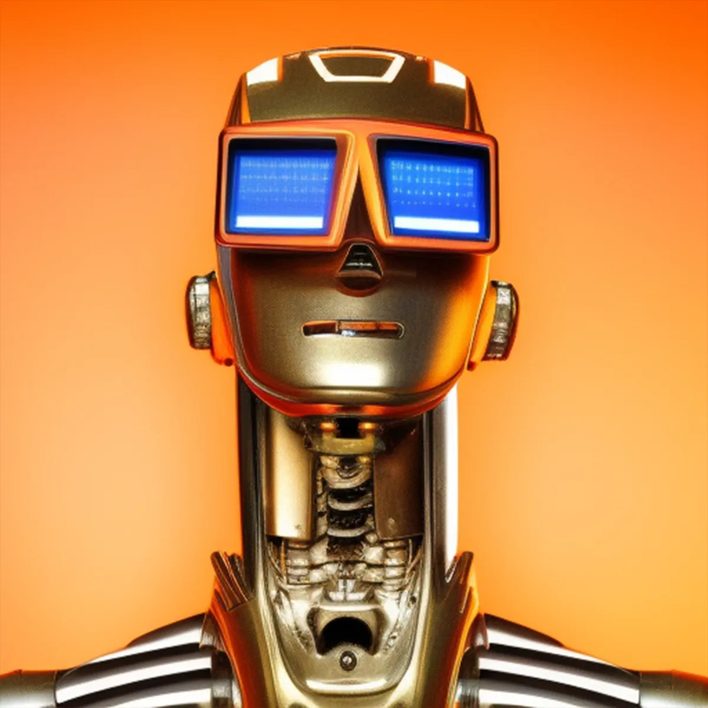
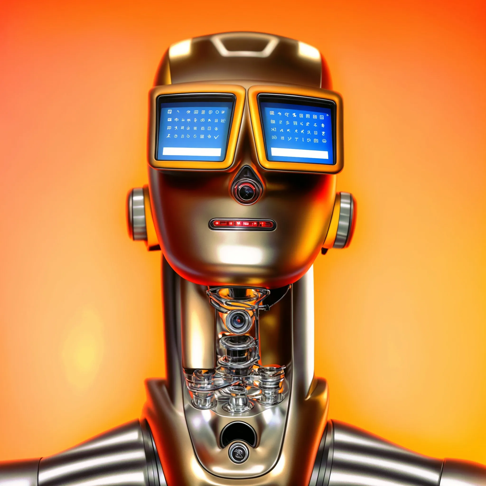
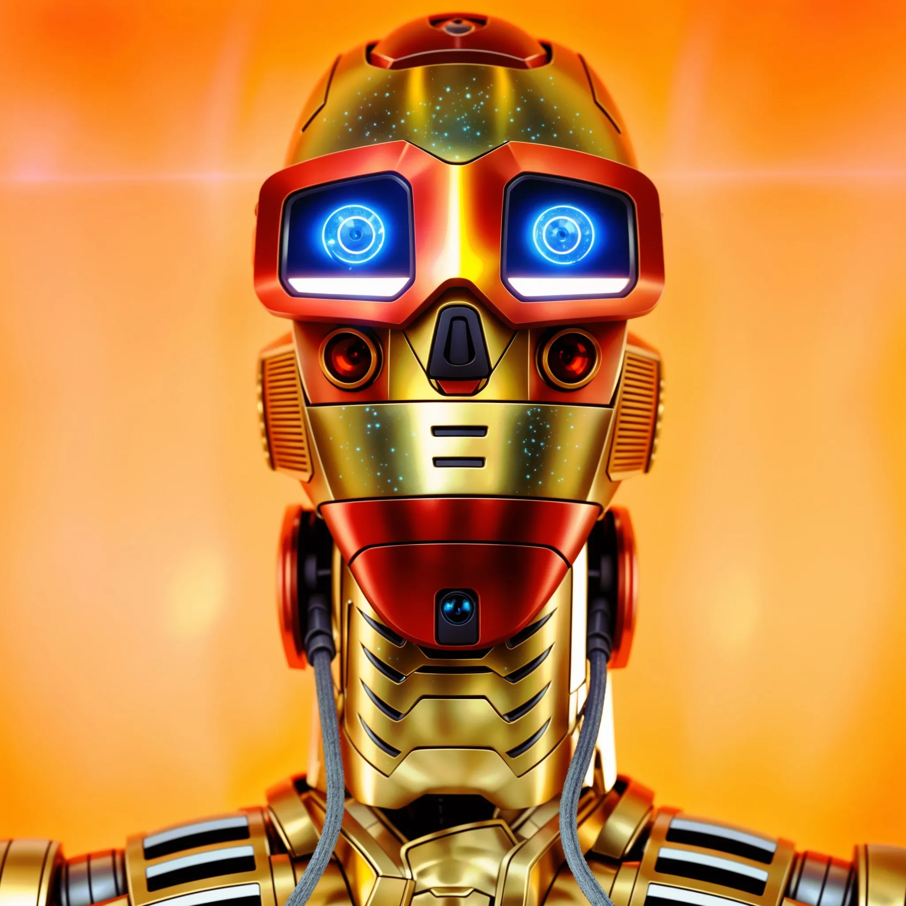
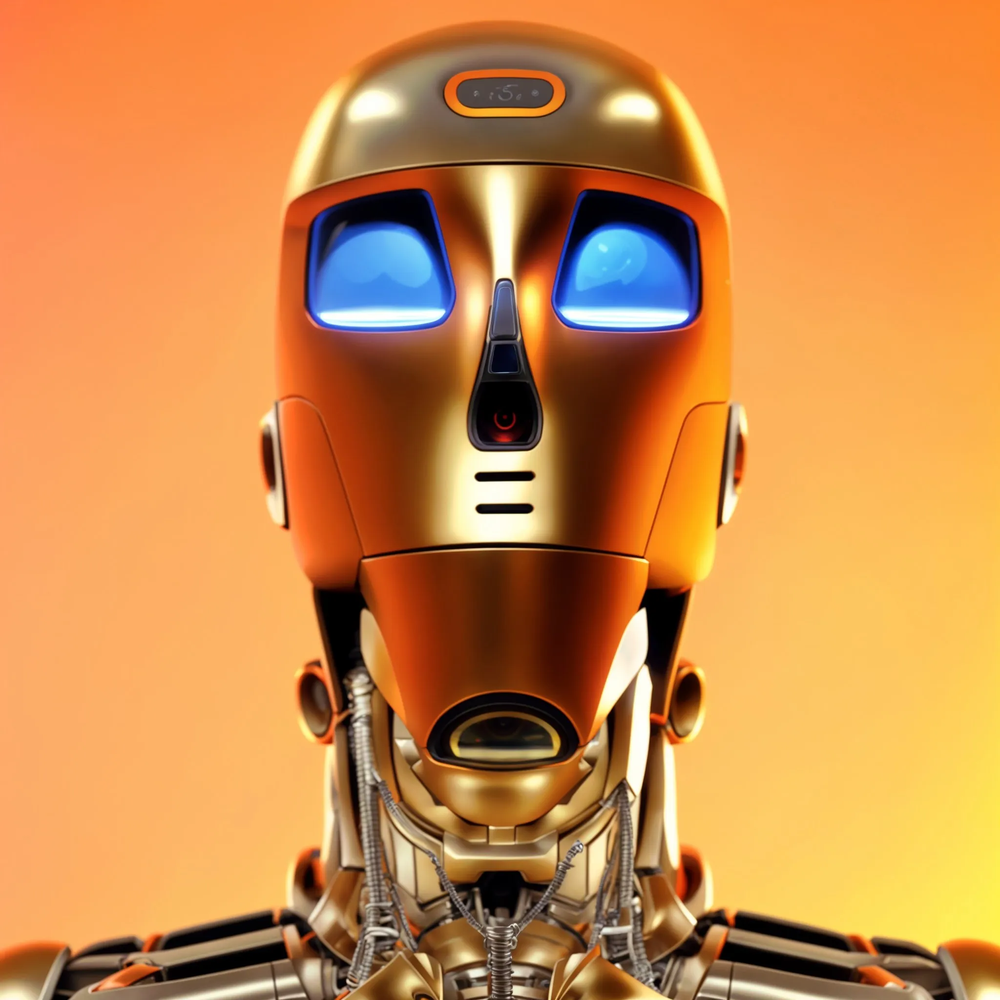

00:00:04:00Art · AI imagery
Alter Ego
A series of alter egos of the creator, generated with Stable Diffusion image-to-image.
- Category
- AI imagery
- Year
- 2023
- Tools
- Stable Diffusion

The Alter Ego project aims to explore the possibilities of AI image-to-image generation technology using Stable Diffusion. Using the SD model, the project generates a series of alter egos of the creator, each unique and representative of different aspects of the self.
The project begins with the collection of a large dataset of personal images that the creator wishes to use to generate their alter egos. The images are fed into the Stable Diffusion model, which analyzes and interprets them to create new images that reflect different aspects of the creator’s personality, interests, and experiences. The model creates a unique image for each input image, capturing its essence and transforming it into a new representation. The new images reflect different visual styles and themes, creating a series of alter ego personas.
One interesting aspect of this project is the relationship between what the creator had in mind when they selected the input images and the final results generated by the model. By examining the input images and the generated images side by side, the project aims to gain a deeper understanding of the ways in which AI can interpret and transform visual information — and how these transformations can provide insight into the self.







Next in Art3D / NFT collection
Analog meets pixels →